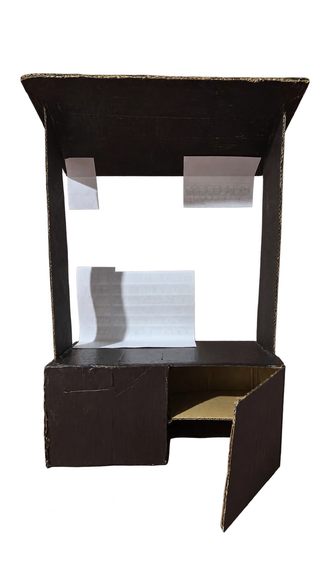
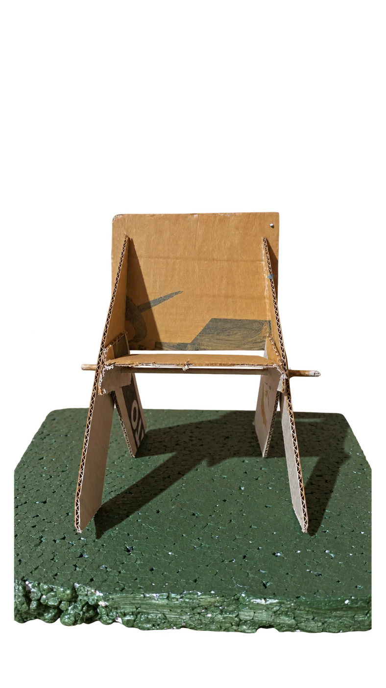
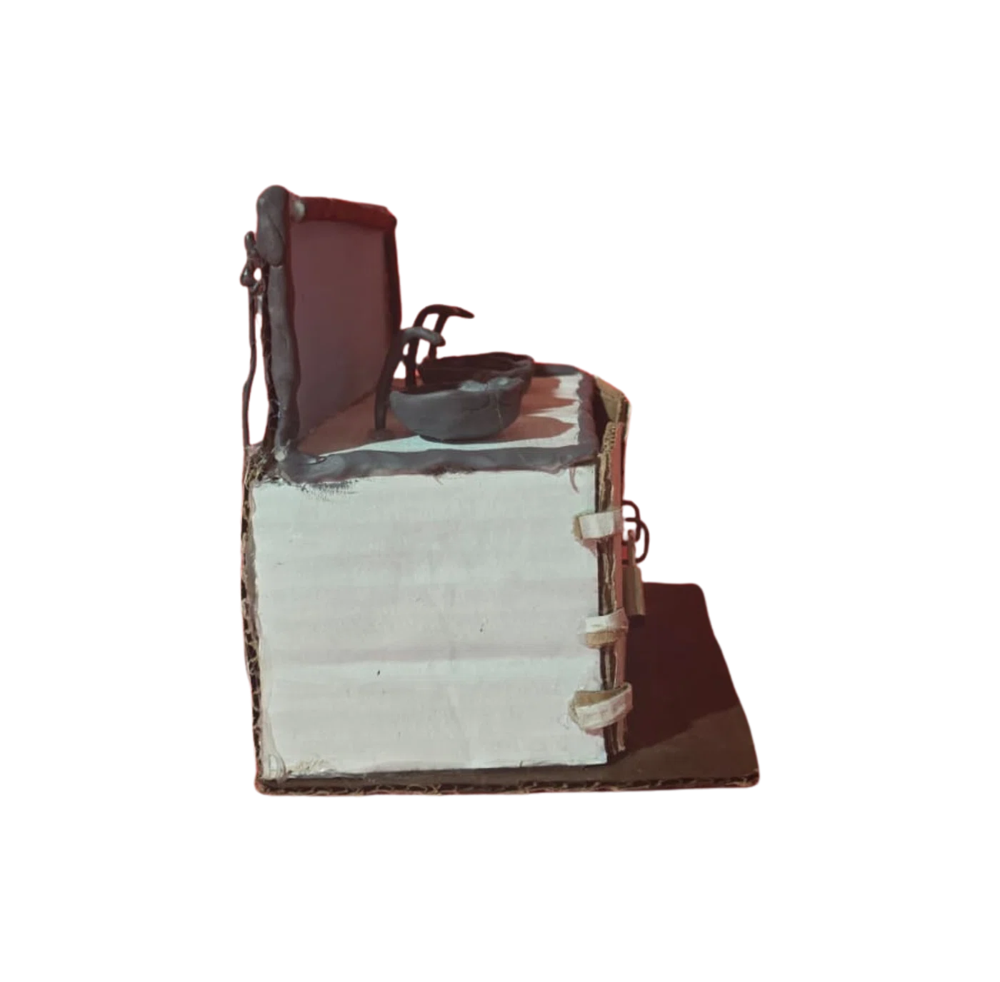
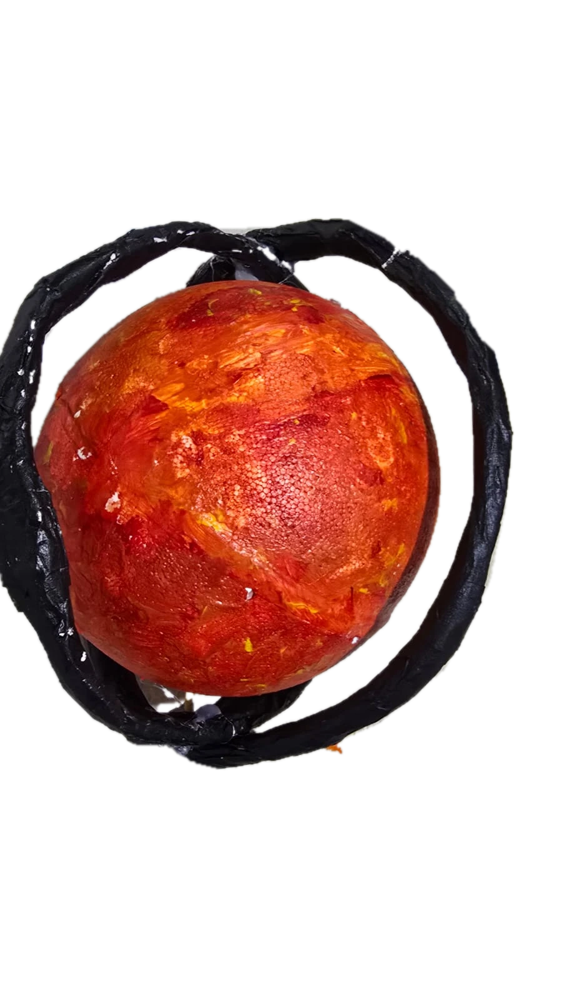

Observar
Reconocer una necesidad de la vida escolar.
Ideas para transformar la escuela
Un recorrido por las necesidades que identificaron los estudiantes, las soluciones que imaginaron y las maquetas que construyeron.



LA TECNOLOGÍA NACE DE UNA NECESIDAD.
07 DESAFÍOS06 MAQUETAS FOTOGRAFIADAS01 INQUIETUD CIENTÍFICASeleccioná cada trabajo para explorar sus fotografías, su afiche y una vista giratoria apoyada en registros reales del prototipo.
No se encontraron proyectos con esos filtros.
La propuesta invitó a pasar del problema cotidiano al diseño de alternativas, la organización de tareas, la construcción y la evaluación.
Reconocer una necesidad de la vida escolar.
Investigar y comparar distintas ideas de solución.
Elegir una propuesta, dibujar y organizar tareas.
Representar la idea en una maqueta o prototipo.
Identificar logros, dificultades y mejoras posibles.

MAQUETA REAL · VISTAS INTERACTIVASAdemás de resolver problemáticas escolares, dos estudiantes eligieron investigar y representar mediante una maqueta una idea que despertó su interés: la esfera de Dyson.
La esfera de Dyson es un concepto hipotético relacionado con la captación de energía estelar. La maqueta construida por los chicos representa una esfera central rodeada de estructuras negras. No existe una esfera de Dyson confirmada como tecnología real.
Gracias por acompañar el recorrido por los trabajos de nuestros estudiantes.
Volver al comienzo ↑